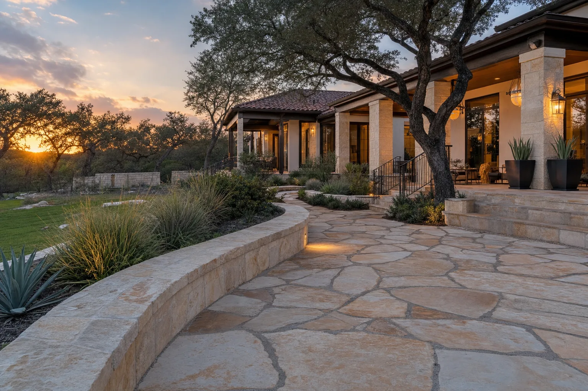
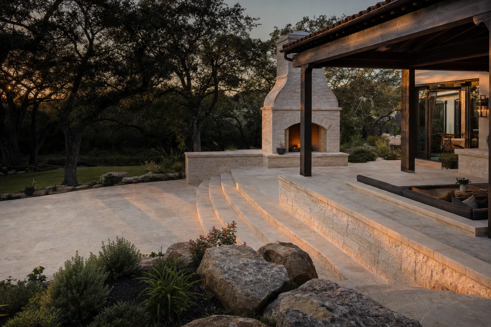
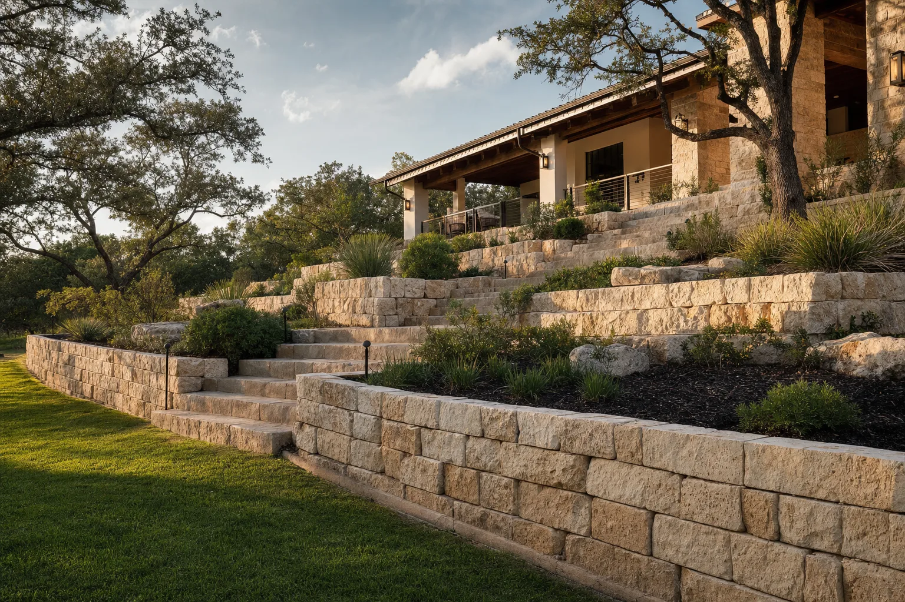
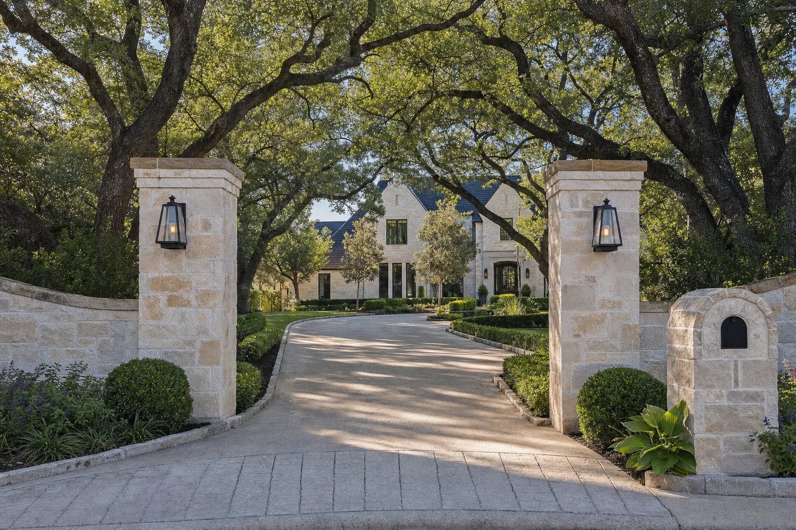
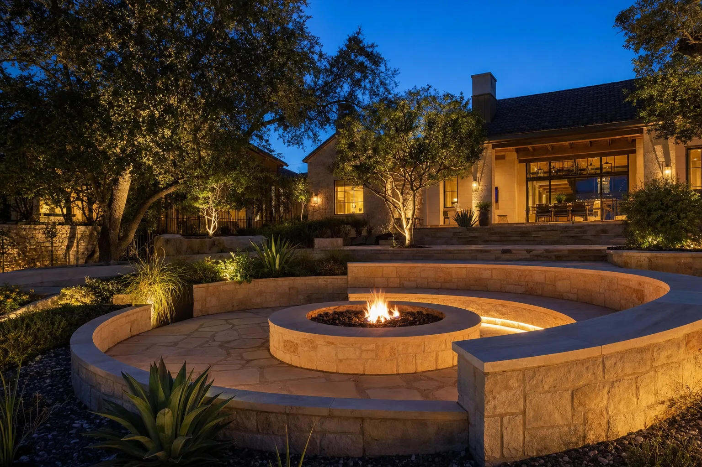
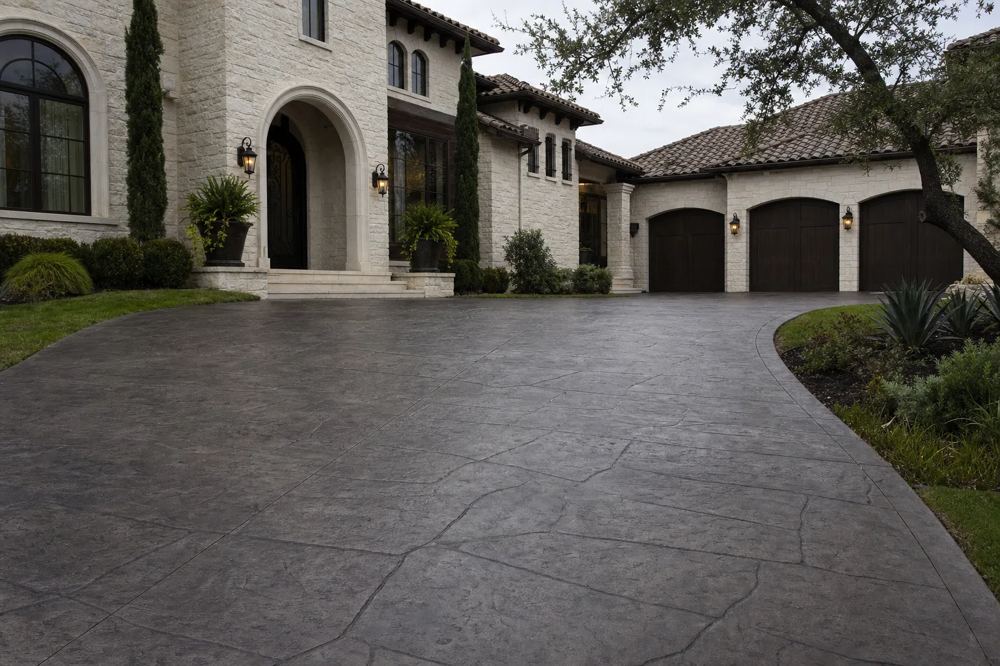

01
Stone Patios
Hand-laid patios shaped around the way your family lives, gathers, and entertains.
Explore service
Premium stonework, patios, retaining walls, concrete, and custom outdoor living—built with integrity by craftsmen who care.


Sanchez Masonry began with a simple belief: honest work and exceptional craftsmanship never go out of style.
Today, Jose Sanchez works alongside his son and a trusted team of experienced craftsmen. We stay personally involved—from your first conversation to the final sweep of the jobsite—because your home deserves more than a standard contractor experience.
“We don’t just build projects. We build the places where families make memories.”— Jose Sanchez, FounderMeet the family behind the craft
From intimate garden walls to complete outdoor living environments, every detail is considered, every line is intentional, and every material is chosen to endure.

Hand-laid patios shaped around the way your family lives, gathers, and entertains.
Explore service
Custom fire pits and fireplaces that turn open yards into year-round destinations.
Explore serviceStructural solutions engineered for Texas soil and finished with architectural beauty.
Explore serviceStone pillars, mailboxes, and entry features that give your property a lasting first impression.
Explore service
Driveways, footings, repairs, and stamped finishes installed with precision from the ground up.
Explore serviceOne-of-a-kind stonework designed to belong naturally to your home and landscape.
Explore serviceWhat lies beneath the surface matters as much as what you see. Proper footings, thoughtful drainage, precise grading, and time-tested installation create work that stays beautiful for decades.
See how we workA collection of outdoor spaces shaped by natural materials, thoughtful construction, and the character of South Texas.
Exceptional work should come with exceptional service. We make the process clear, respectful, and personal from start to finish.
You work directly with a local family invested in every outcome.
Straight answers, regular updates, and no disappearing acts.
Detailed estimates and thoughtful options without pressure.
Experienced hands, premium materials, and pride in every detail.
We respect your home, your time, and the schedule we promise.
Sound construction practices designed for South Texas conditions.
“Jose and his team treated our project like it was their own home. The stonework is exceptional, the site stayed clean, and every promise was kept.”
“From the first estimate to the final walkthrough, communication was outstanding. Our new outdoor space feels like it has always belonged here.”
“True craftsmen. They solved a difficult drainage and retaining wall problem, then made the result look beautiful. We recommend them without hesitation.”
We keep complex projects straightforward with a personal, proven process and clear communication at every milestone.
We visit your property, listen to your ideas, and discuss the right approach.
Together, we refine materials, details, scope, and a transparent proposal.
Our experienced team builds carefully, protects your home, and keeps you informed.
We inspect every detail, clean the site, and walk the finished work with you.
Based in San Antonio, Texas, our team serves homeowners throughout the city and surrounding communities. For larger custom projects, we’re happy to travel farther.
Have a different question? Call us directly. You’ll speak with someone who understands the work.
(210) 328-7738Smaller repairs may take one to three days, while patios, retaining walls, and full outdoor living projects typically take one to six weeks. Your proposal includes a clear schedule before work begins.
Yes. We provide complimentary on-site estimates throughout San Antonio and nearby communities, with honest recommendations and transparent scope.
We select materials around your architecture, performance needs, and budget. Texas limestone, flagstone, concrete, and high-quality manufactured products are common choices.
Absolutely. We repair cracked concrete, loose stone, failing mortar, damaged walls, and aging masonry while matching existing materials as closely as possible.
Yes. Every patio can be tailored to your property, from shape and stone selection to seating walls, steps, fire features, and landscape transitions.
We serve San Antonio, Texas, and the surrounding communities. Reach out with your ZIP code or neighborhood and we'll confirm right away.
Tell us a little about your project. We’ll reach out to schedule a complimentary on-site estimate and help you understand the best next step.